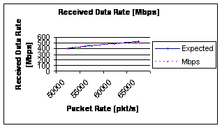
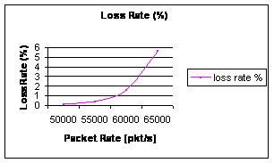
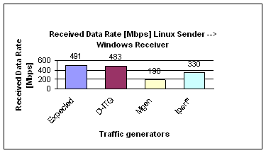
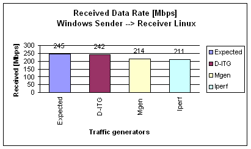

In this subsection we present an interesting study concerning a cross platform performance analysis. We choose traffic generators running both over Windows and Linux platforms and we carried out a comparative analysis interchanging the role of sender and receiver: let TGi the i-th traffic generator, let W-TGi the Windows version of the i-th traffic generator and let L-TGi the Linux version of the i-th traffic generator. We carried out a complete performance measurement in the case of:
- L-TGi Sender -> W-TGi Receiver
- W-TGi Sender -> L-TGi Receiver
Linux Sender and Windows Receiver
Before presenting the comparative study we show the D-ITG performance when the pkt/s growths. Figure 1 shows the Windows D-ITG receiver data rate by using a Linux D-ITG sender. In this case with C=60000pkt/s, c=1024byte, t=60s D-ITG reaches a generated data rate equal to 483Mbps (with an error equal to 1.6%).
 |
 |
|
Figure 1: Received data rate with Linux Sender and Windows Receiver (distributed and log at sender and receiver side) |
Figure 2: Loss rate (%) with Linux Sender and Windows Receiver (distributed and log at sender and receiver side) |
After D-ITG multiplatform analysis, Figure 3 shows a comparative analysis among traffic generators. Also in the multiplatform environment D-ITG presents the best performance. In a heterogeneous network scenario where a high number of Operating Systems are present, we believe that this feature is very interesting.
 |
|
Figure 3:Comparative analysis of received data rate with Linux Sender and Windows Receiver (distributed and log at sender and receiver side) |
Windows Sender and Linux Receiver
Figure 4 shows the Linux D-ITG receiver data rate by using a Windows D-ITG receiver. In this case with C=30000pkt/s, c=1024byte, t=60s D-ITG reaches a generated data rate equal to 483Mbps (with an error equal to 1.6%). Also in this case D-ITG shows the best performance.
 |
| Figure 4:Comparative analysis of received data rate with Windows Sender and Linux Receiver (distributed and log at sender and receiver side |
Notes on the different performance under Linux and Windows
In order to determine the time when the packet is sent or received (needed by logging operations) and the time interval elapsed since the transmission of the last packet sent, the D-ITG Linux implementation uses the gettimeofday() function, while the Windows implementation uses getSystemTime() and QueryPerformanceCounter() functions. In this subsection, we want to investigate the efficiency of the different functions used under the two operating systems. A different behavior of these crucial functions may be one of the factors causing Linux implementation to perform better than the Windows counterpart.
We carried out the following test. We ran the pieces of code invoking the above mentioned functions 100.000 times and obtained the results shown in Table 1. As we can see, the execution time under Windows is longer than that under Linux. We are far from stating that the different performance achieved under the two platforms is directly linked to the different execution time of the functions retrieving the current time, but we believe that it could be one of the factors. Further investigation is needed in order to support this statement.
|
||||||||
| Table 1:Execution time |